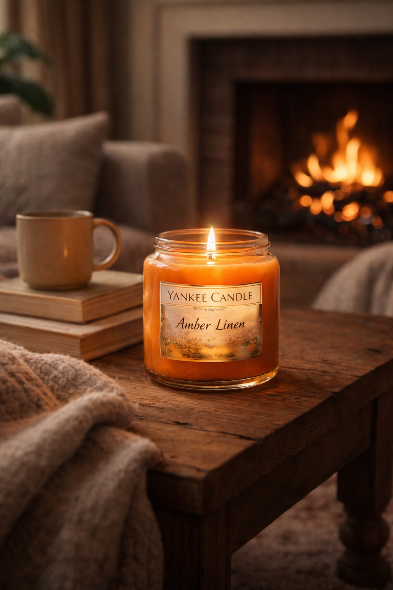
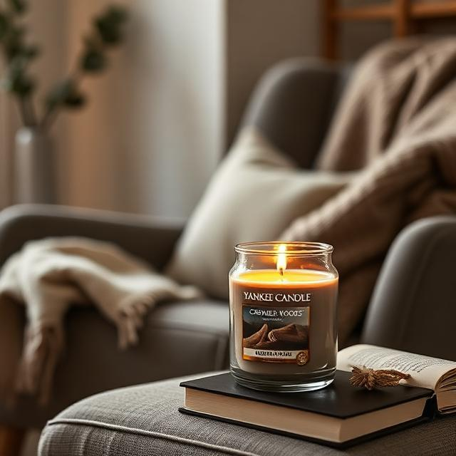
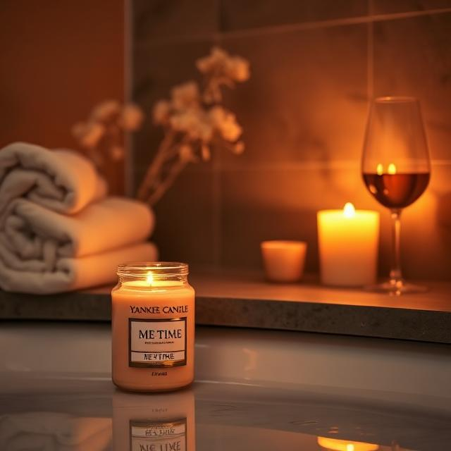

Amber Linen
Clean cotton softened by warm amber — designed for evenings that begin at home.

Vanilla Dusk
A gentle blend for winding down as the day quietly fades.

Cashmere Woods
Soft woods and warmth for moments of still focus.

Me Time
A pause you don't have to earn. Just light it.